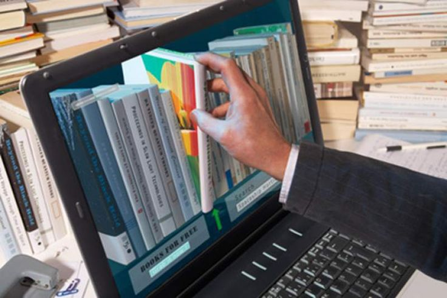
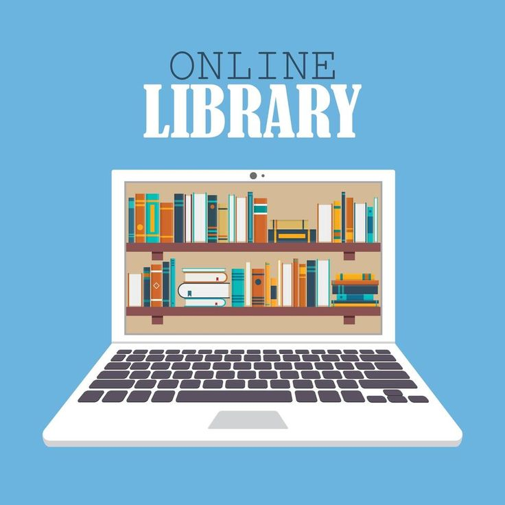

Perpustakaan Digital Hasil Kemajuan Teknologi
Perpustakaan digital (digital library atau E Library) adalah tempat di mana Anda dapat meminjam koleksi buku dan sumber edukatif lainnya secara digital atau daring.
Perpustakaan digital adalah salah satu hasil kemajuan teknologi yang telah mengubah cara kita mengakses dan berinteraksi dengan informasi.
Dalam era di mana teknologi terus berkembang dengan cepat, perpustakaan digital telah menjadi tonggak penting dalam upaya memudahkan akses ke berbagai jenis bahan bacaan dan referensi.
Dahulu, perpustakaan tradisional dengan koleksi fisiknya adalah satu-satunya sumber pengetahuan utama.
Namun, dengan perpustakaan digital, kita dapat mengakses ribuan buku, jurnal, artikel, dan sumber daya lainnya melalui internet.
Kemajuan ini tidak hanya membuat informasi lebih mudah dijangkau, tetapi juga mengurangi keterbatasan geografis dan waktu, memungkinkan pengguna untuk mengeksplorasi pengetahuan tanpa harus datang langsung ke perpustakaan fisik.
Perpustakaan digital adalah bukti nyata bagaimana teknologi telah merubah cara kita belajar, meneliti, dan mengakses pengetahuan, membawa manfaat yang signifikan dalam menghadapi tuntutan dunia yang semakin digital ini.
Layanan Perpustakaan Digital
- E-Resource
- E-Book
- E-Catalog
- Repository

Kelebihan dan Kekurangan Perpustakaan Digital

Perpustakaan digital memiliki sejumlah keunggulan yang menjadikannya pilihan yang sangat menarik dalam dunia yang semakin terdigitalisasi ini.
Salah satu keunggulan utamanya adalah aksesibilitas. Dengan perpustakaan digital, sumber daya informasi dapat diakses dari hampir mana saja, kapan saja, asalkan terhubung ke internet.
Hal ini menghilangkan hambatan geografis dan waktu yang seringkali terkait dengan perpustakaan fisik.
Selain itu, perpustakaan digital juga menyediakan akses cepat dan mudah ke berbagai jenis materi, termasuk buku, jurnal, artikel, dan dokumen berharga lainnya, yang dapat dicari dan diunduh dengan cepat.
Keunggulan lainnya adalah ruang penyimpanan yang tidak terbatas, sehingga pengguna dapat mengakses dan mengumpulkan sejumlah besar sumber daya tanpa perlu khawatir tentang batasan fisik.
Selain itu, perpustakaan digital memiliki fitur pencarian yang canggih, memungkinkan pengguna untuk menemukan informasi dengan mudah.
Semua keunggulan ini membuat perpustakaan digital menjadi alat yang sangat berharga dalam mendukung pembelajaran, penelitian, dan peningkatan pengetahuan dalam era digital saat ini.
Meskipun perpustakaan digital memiliki sejumlah keunggulan yang signifikan, terdapat beberapa kekurangan yang perlu diperhatikan.
Salah satu kekurangan utamanya adalah keterbatasan aksesibilitas bagi mereka yang tidak memiliki akses internet atau perangkat yang diperlukan.
Hal ini dapat menyulitkan individu yang berada di daerah dengan konektivitas internet yang buruk atau yang tidak memiliki akses ke perangkat seperti komputer atau smartphone.
Selain itu, ada juga masalah hak cipta yang dapat membatasi akses terhadap beberapa sumber daya di perpustakaan digital.
Beberapa materi mungkin hanya tersedia dalam bentuk berbayar atau melibatkan pembatasan penggunaan yang lebih ketat dibandingkan dengan perpustakaan fisik.
Keberlanjutan juga menjadi kekurangan, karena teknologi yang digunakan dalam perpustakaan digital terus berkembang, sering kali menyebabkan perubahan format yang mungkin mengganggu akses ke materi yang sudah ada.
Terakhir, kekhawatiran tentang privasi dan keamanan data juga muncul, mengingat bahwa penggunaan perpustakaan digital dapat melibatkan penyimpanan dan penggunaan data pribadi.
Oleh karena itu, sementara perpustakaan digital menawarkan banyak keunggulan, perlu memperhatikan dan mengatasi tantangan ini untuk memastikan akses yang adil dan aman bagi semua pengguna.